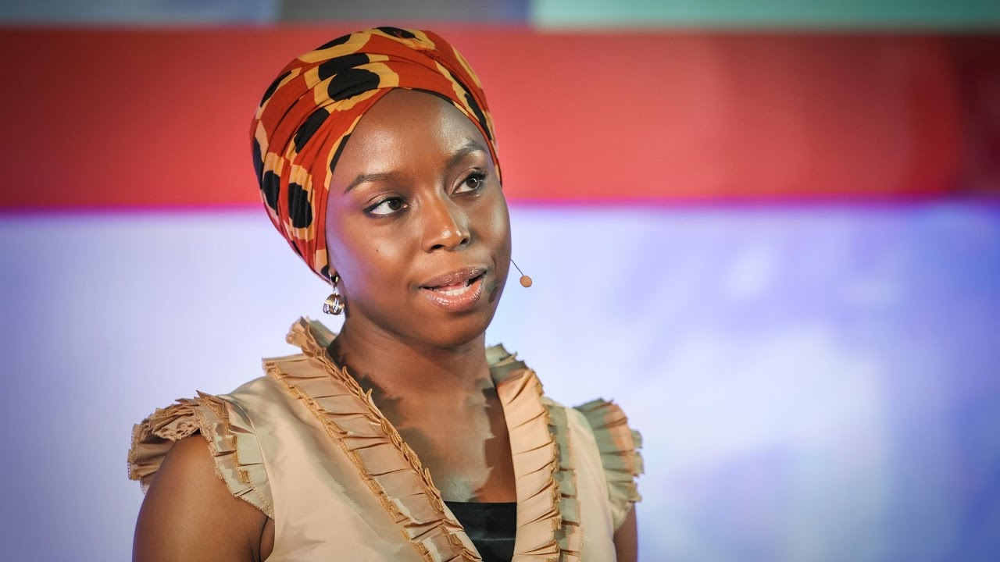

Single stories are descirbed as, "overly simplistic and sometimes false perceptions we form about individuals, groups, or countries."
In this TED Talk, Chimamanda Ngozi Adichie tells about the dangers of a single story through personal experiences and storytelling. She talks about how single stories have affected her, and also how it has affected others in her life. Single stories are dangerous because of the stereotypes they perpetuate. "That is how you create a single story, show a people as one thing. As only one thing, over and over again and that is what they become." Once a single story is formed, the truth is never revealed. It is told so many times that it becomes, to an extent, everyone's reality. This is obviously very damaging to the people who believe the story, and to whom the story is about.
Chimamanda Ngozi Adichie directly explains the dangers of a single story. She gives specific examples, such as her roommate assuming she doesn’t know how to use a stove and thinking her house boy’s family was nothing but poor. When she first meets her university roommate, she is treated as if she doesn’t speak english and doesn’t know how to utilize modern appliances. When she visits her house boy and sees a basket his mother made, she’s very surprised, and expresses that she simply thought a family so poor was incapable of making something like that. This shows that she’s using experiences from her own life and reflecting upon how damaging they are to not just foreigners, but herself as well. She shows us that single stories are dangerous because you’re only being exposed to the negative aspects, which are false most of the time anyway. The truth is hidden away from you, and you are forced to see things in a negative light.